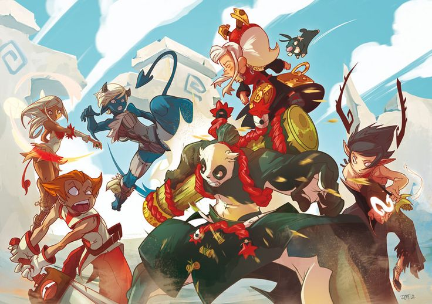
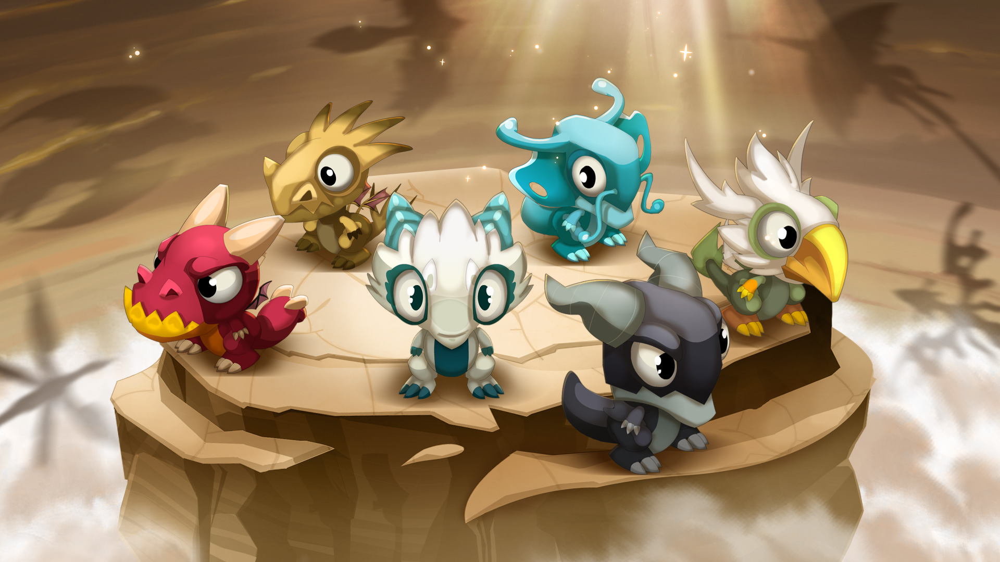

Le Krosmoz est un œuf-univers créé il y a plus de 11 000 ans par
la Grande Déesse Eliatrope et le Grand Dragon, et constitué de
différentes dimensions, dont le Plan Matériel qui abrite
d'innombrable galaxies, systèmes solaires, et planètes. L'une
d'elle, théâtre d'événements tout à fait remarquables, est le
Monde des Douze.

Les Dieux et les Démons
Les Douze Dieux et Déesses font partie des toutes premières âmes
à s’incarner dans le Krosmoz. Rattachés au Monde des Douze, ceux
que l’on appelle les Douze, ne sont à l’origine que dix. Après
la première danse de la Déesse Eliatrope et du Grand Dragon, les
premières âmes à s'incarner dans le Krosmoz furent les dix
premiers Dieux et les dix premiers Démons.
Les éliatropes
Quelque temps après la création du Krosmoz, la Grande Déesse
Eliatrope s’ennuie encore. Elle séduit alors à nouveau le Grand
Dragon et celui-ci, pond six Dofus. Mais la Déesse a l’instinct
maternel et souhaitant jalousement protéger ses œufs, elle
décide de les cacher sur une planète reculée.Les Dofus éclosent
à l’abri, et donnent naissance aux Eliatropes et à leurs frères
jumeaux Dragons Eliatropes. Ensemble, ils forment les premiers
nés de leur peuple. Et, organisés en Conseil des Six (ou des
Douze, si l’on compte leurs frères Dragons), ils gouvernent les
autres Eliatropes, nés de façon naturelle.

Les Dragons
Les Dragons sont des créatures dont on connaît peu de choses à
leur sujet. Ils sont tous extrêmement puissants et pondent des
œufs, appelé Dofus quand ils tombent amoureux.